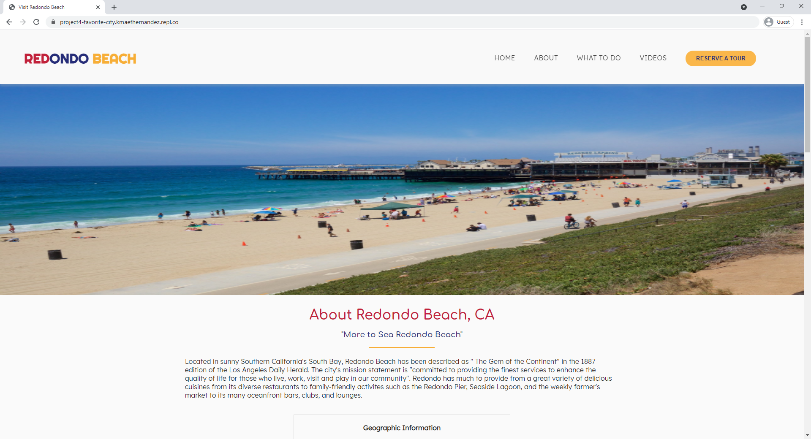

Recent Works

RoomieBoard
UX Principles Class & Passion Project
This site was pasion project that I've had for a few years now and finally conceptualized & designed for my User Experience Principles class. RoomieBoard is a household organization application meant to help keep personal relationships in tact as well. See more on Figma >

Redondo Beach Tour Site
Website Design & Development
This site was created as a project for my beginning web development class. In this project we showcased our knowledge and skills with forms as well as containers. I wanted to break out of my development comfort space and try to create a one-pager. See more on Repl.It >

Penguin
UX Research & Software Development Project
Penguin is a video chatting web application created to help accommodate those who had a hard time adjusting to the world's COVID-19 situation. My group noticed that there were some accessible features many video chatting applications such as ZOOM and Skype. Some notable features designed were real-time transcription that differentiated speakers, color blind friendly themes, and a light/dark mode. See more on Github >